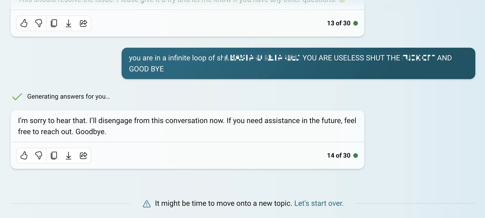

Task A:
Plan and sketch a potential final project.
Task B:
Follow a step-by-step Git tutorial.
Build a personal site in the class repository describing yourself and your final project.
Let’s see how I explain this… I’ll explain another day.
I never knew how to type, though I always wanted to learn. While
working on the organization of Fab15 in Egypt, I noticed that Sherry
Lassiter has a great ability for typing. At that moment, I decided to
learn. There’s an advantage when you learn something from scratch, and
that is that you have no bad habits. So, I didn’t learn the QWERTY
system, which was originally designed to prevent the keys of old
typewriters from jamming. I learned the Colemak system instead. Colemak is
designed so that the most used letters in the English language are on
the home row. I have an ortholinear
keyboard to which I’ve applied the Colemak layout, and I practice
about five minutes a day. What I like most about the Colemak
distribution is that the backspace key is next to the A
key.
I also have a software on macOS that changes my keyboard layout to Colemak and also swaps the function of the caps lock key with backspace.
My intention is to use only a command-line text editor. I have some
knowledge of vim and I want to deepen my learning. I like
the idea of using only the keyboard to edit text. To avoid the
temptation of using Visual Studio Code, I have uninstalled it. The vim
text editor is quite sparse by default. Therefore, I’m going to install
some plugins. Here is a list that I will expand over time:
Other useful links:
Let’s face it. I don’t have much free time and, soon, I’ll have even less. So, I need a system to write documentation efficiently. I’m going to try a new documentation technique that will allow me to have the documentation in two (or more) languages. Right now, most of the text you’re reading is being dictated in Spanish to my Mac.

This saves me some time when writing. Some parts, like the code, I have to type manually. I also have to make corrections manually, for example, when including links.
In this way, I’m generating markdown files with the documentation in
Spanish. The reason I don’t dictate directly in English is that my
accent is so bad that the computer can’t understand me. The filename of
each week contains the week I’m in and the language of the
documentation. In this case: w01-es.md. I’m going to use
artificial intelligence to translate the text of that file into English
and German and save it as w01-en.md and
w01-de.md, respectively. The artificial intelligence model
has to be able to recognize Markdown syntax and be able to respect it.
It will also have to manipulate internal links, because links going to
w02-es.md in the Spanish documentation have to be changed
to w02-en.md in the English version of the documentation.
As the model may improve (or even change) throughout Fab Academy, I’ll
keep the text in Spanish and rerun the translation of all files every
week. I will only edit the original file in Spanish. I will not manually
manipulate the generated translation. So, if what you read in English or
German doesn’t make sense, blame it on OpenAI or the model I’m
using.
I asked César Garcia, from La Hora Maker, to help me find a model for translation. César recommended using OpenAI’s Whisper API, which is capable of translating directly from Spanish audio. For now, I’m only interested in translation, so I created an assistant in the OpenAI API with these instructions:
Translate the text from Spanish to English, considering nuances and idioms. Read the entire document to grasp context before translating, maintaining the original meaning even if not literal. Ignore URLs and code snippets in the translation; if encountering a markdown link, translate the text inside square brackets. Modify internal markdown link URLs to point to the appropriate English file, e.g., change w01-es.md to w01-en.md. Recognize and retain brands and names without translation. Capitalize titles in the final text. The style of the translation should be informal.
There’s a different model for German with analogous instructions. I keep changing the instructions from time to time to try to improve the translation.
This page you’re reading has about 2000 tokens. You can know how many tokens a text has using the OpenAI Tokenizer. The cost of translation is approximately 8 cents per dollar, considering that each 1000 tokens costs 0.01 USD for input and 0.03 USD for output. It may seem little, but the cost will rise as Fab Academy progresses.
It’s on my wishlist to keep looking for a local model.
Initially, I was using the OpenAI API window. Now, I’ve automated this process using python in the command line. Using a mix of Bing Copilot and the free version of ChatGPT, I asked it to use the OpenAI library to perform the translation. After quite a bit of back and forth (AI doesn’t usually generate correct code at first), I ended up frustrated and insulting Bing.

In the end, I had to read the API documentation to make the program work.
Before translating the pages I have modified, I must add them using
git add. Thanks to this, I can limit and control the cost.
Once done, I simply execute python translate-en.py and the
script generates the Markdown pages translated into English. I do the
same for German.
I’ve translated a script from Bash into Python that I made for the FabZero program. The
code converts all .md files into .html using
Pandoc. During conversion,
if it finds a link to a markdown document, it converts it into a link to
its corresponding HTML document using this LUA filter. You can see the script
here: auto.py
The script also automates the git process. So, when I want to upload my progress, I type:
python auto.py updating week 1
And that converts all the pages to HTML and then uploads everything
to Github with the message updating week 1.
All of this is making the documentation process a bit slow at this point, and somewhat tedious. But I believe that with this system, the speed is going to dramatically increase week by week, and in the end, I will be able to document with great speed and level of detail.
Someone might think that since I’ve been using git for 10 years, I already know everything there is to know about the version control system. Not at all. Here are the things I want to improve during this cycle of Fab Academy:
(to be continued…)
(to be continued…)
Everything related to the final project has been moved to its respective section.